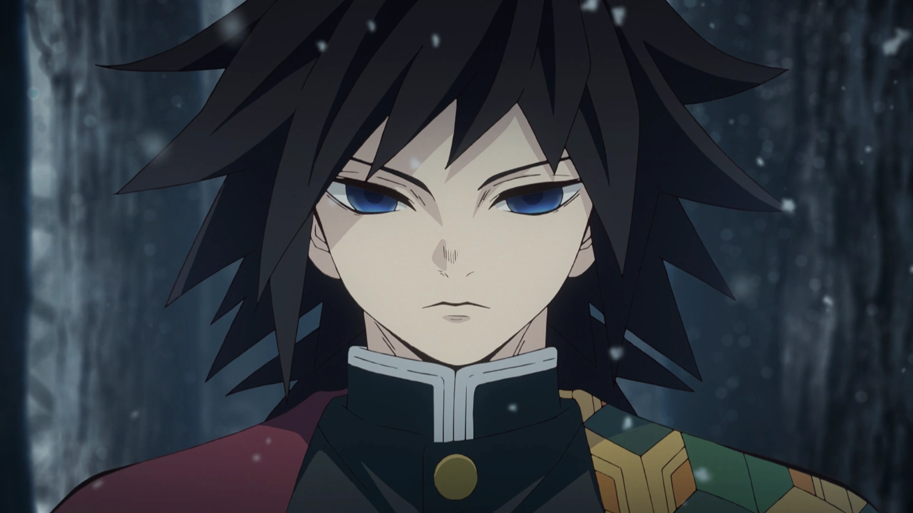
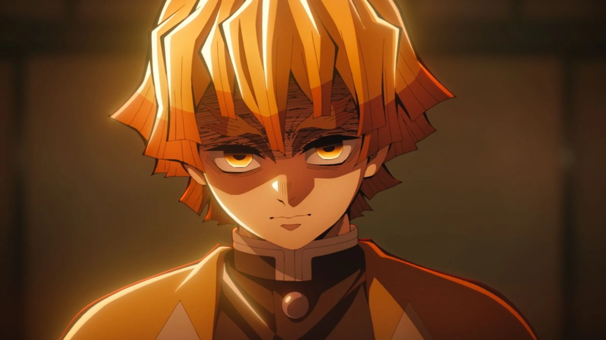
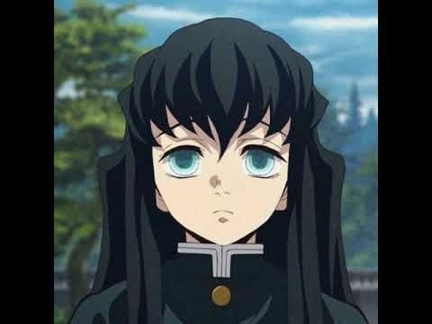

Tomioka Giyuu
Giyu Tomioka is the Water Hashira in the Demon Slayer

Agatsuma Zenitsu
he is a master of thunder breathing,a technique he can only perform when he is asleep or
unconscious

Tokitou Muichirou
He is initially known for his calm demeanor, confusion, and insensitivity due to his memory loss. However, his character shows significant development, revealing a deeper desire to protect others.